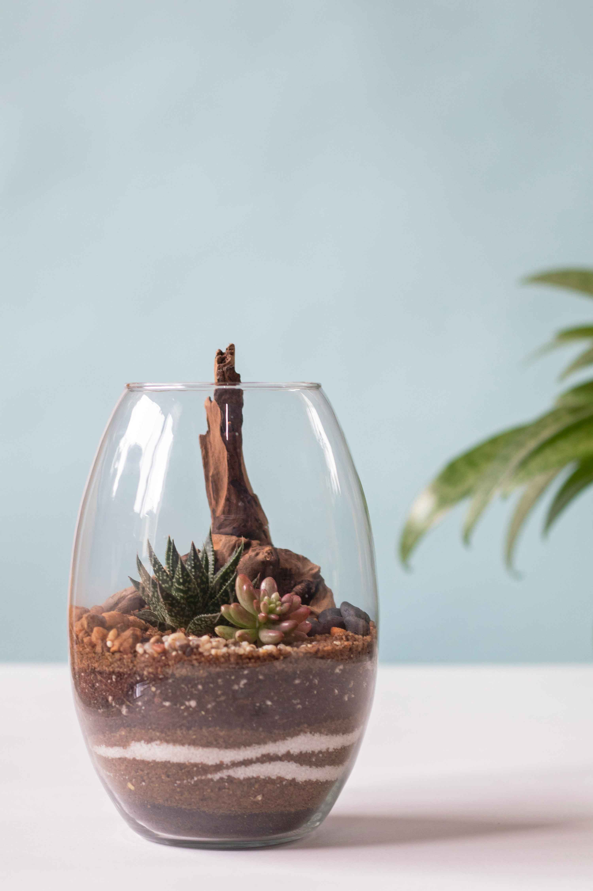
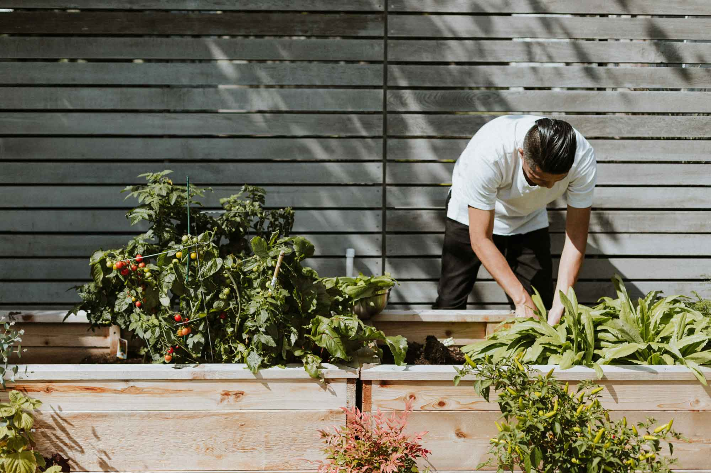
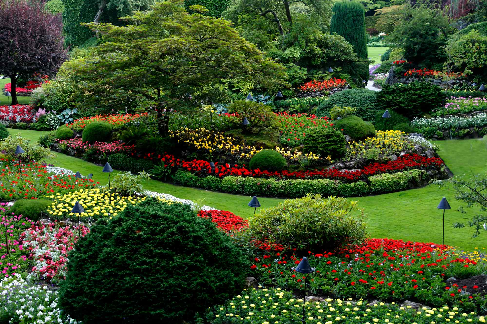
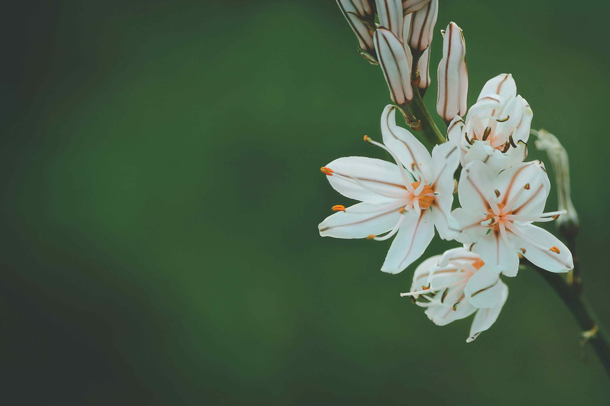
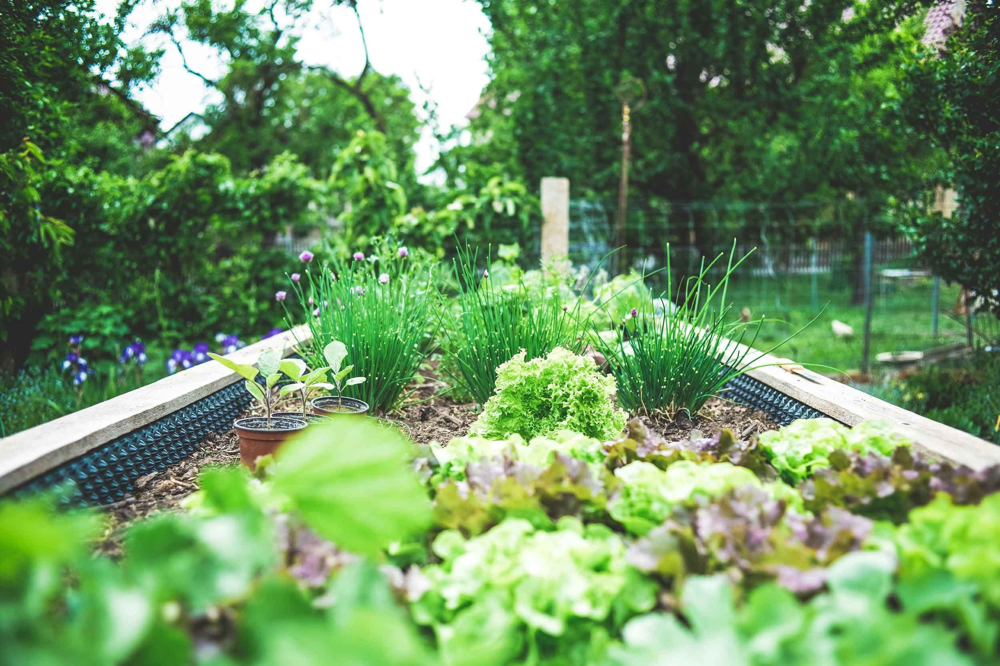

Upcoming Events




Our Gallery
A Living Tapestry: “Step into a meticulously curated living gallery, where rare botanical treasures are arranged to evoke the lush, mysterious beauty of a remote tropical rainforest”.
The Hidden Oasis: “An escape from the ordinary, this gallery brings together striking, unusual specimens from the Amazon, African rainforest, and Southeast Asia, creating a serene, verdant, and immersive sanctuary”.
Sculptural Paradise: “An artistic display of nature’s most inventive designs—where the wild patterns of rare monstera and the fiery colors of exotic gingers act as living art installations”.
Rare & Resilient: “Explore an intimate, curated gallery highlighting exotic plants that are not just beautiful, but tough; a collection of extraordinary plants that thrive in both tropical and indoor, air-conditioned climates”.
The Botanical Cabinet of Curiosities: “Discover a stunning collection of rare and endangered species, featuring exceptional specimens from CITES programs that are rarely found elsewhere”.
Best Sellers






Reviews
The concept is amazing, but it was a bit crowded when I visited, which made it hard to enjoy the atmosphere. I'd recommend going.
Matt Mar 18,2024
The concept is amazing, but it was a bit crowded when I visited, which made it hard to enjoy the atmosphere. I'd recommend going.
Matt Mar 18,2024
The concept is amazing, but it was a bit crowded when I visited, which made it hard to enjoy the atmosphere. I'd recommend going.
The concept is amazing, but it was a bit crowded when I visited, which made it hard to enjoy the atmosphere. I'd recommend going.
Matt Mar 18,2024